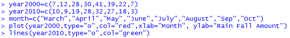
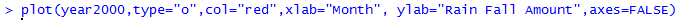
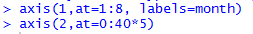
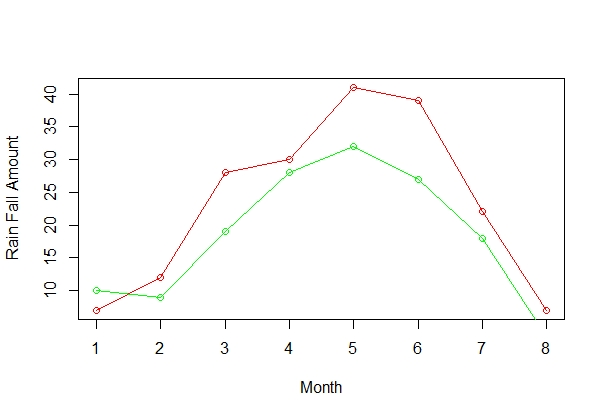
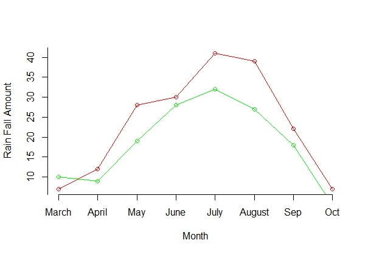

Format Axes
Introduction
When using the plot() function, R will label the x- tick marks as 1, 2, 3, etc. in an ascending order, and label y-axis tick markers based on the values provided. We can manipulate the axis attributes using the R function axis().
Knowledge
If we need to change the labels on the x-tick marks and y-tick marks, we need to firstly claim axes=FALSE in the plot() function to remove all the labels of the x- and y-axis. Then use the function axis() to add all the labels and tick marks. The R syntax of the axis () function is
axis(side, at = , labels = , tick = , las=, lwd = , col = , col.ticks = )
side: 1 for horizontal x-axis; and 2 for vertical y-axis
at: numeric vector where the tick marks are to be drawn
labels: character or numeric vector of the labels placing by the tick marks
tick: a logical value specifying whether tick marks and an axis line should be drawn. The default is TRUE
las: 0 for parallel labels to the axis, 2 for perpendicular labels to the axis
lwd: line widths for the axis and the tick marks
col: color for the axis line and tick marks.
col.ticks: color for the tick marks if different from the axis color.
Practice and Reflection
Practice
Example 5: Use the data from Activity 4. If we write the R code as following

Then the graph will not show appropriate x-axis labels as the eight months in words. Instead, the labels of the x-axis will be the default numbers (figure 7 a). If we include the argument axes=FALSE in the plot function
and add the following lines to the code

The output graph will show the correct x-axis label as the eight months (figure 7 b).

Figure 7 a. Plot of rain fall amount over months without the correct x-labels

Figure 7 b. Plot of rain fall amount over months with the correct x-labels.
Reflection
Activity 5: The data below shows the average price of each type of the car in Minnesota. Genearte a bar graph to show the average price of each type of the car. Label the x-axis tick marks as the five types of cars. Label the y-axis from 0 to 55 with an increment of 5. Include x-label as “Cars” and y-label as “Average Price”. Put the y-axis labels perpendicular to the axis.| Car | BMW | Toyota | Honda | Ford | Volvo |
| Average Price (k) | 52 | 26 | 24 | 22 | 54 |
Assessment
Use the R dataset ToothGrowth to generate multiple box plots in one graph to show the five number summary of tooth length(len) for the two supplement type (supp). Add x- and y-axis labels. Add title and legend to the graph. Place the text “Highest Median” right below the highest median line on the graph.